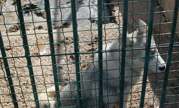
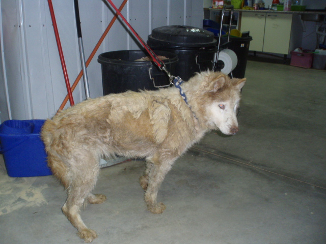
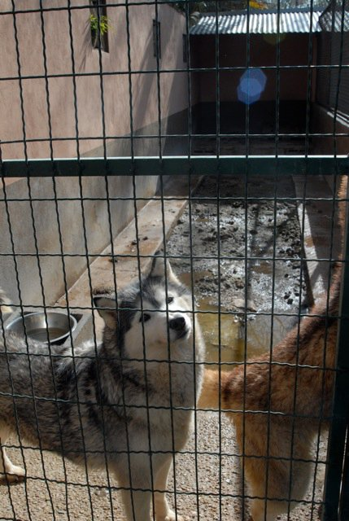
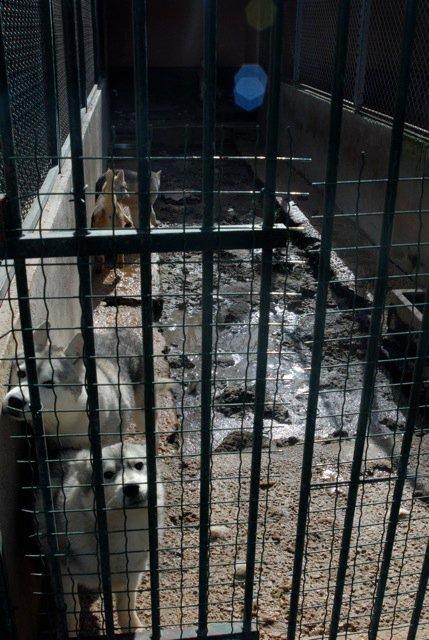
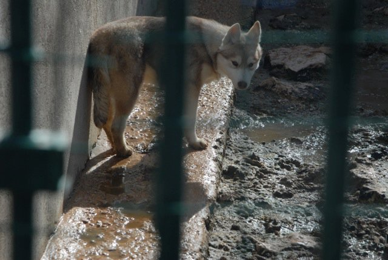
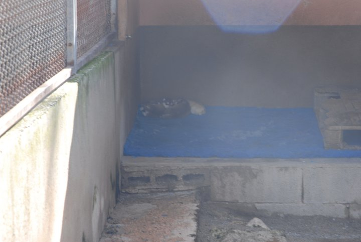
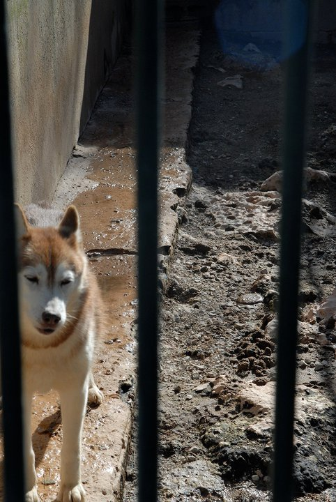
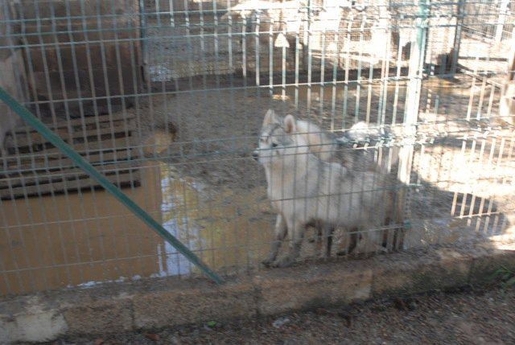
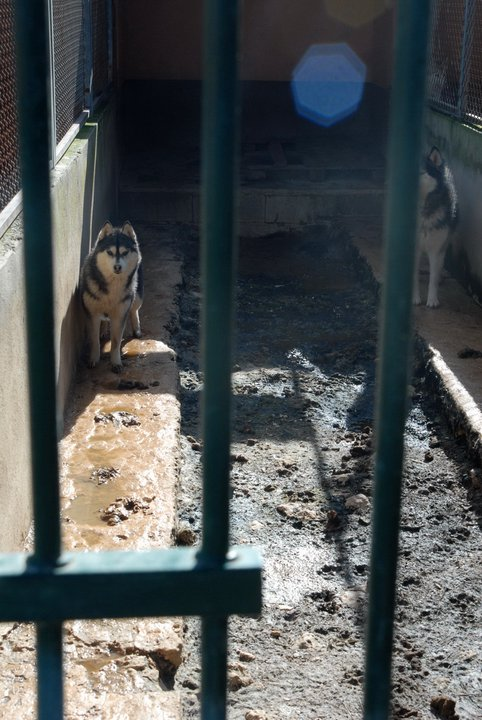

Horror en un criadero de Huskys en Mallorca

CRIADERO DE HUSKYS SIBERIANOS EN MALLORCA
Se mandan algunas fotos del criadero. Destaco la foto de la perra rescata (lisa) la cual se encuentraen muy mal estado, desnutrición severa,entre otros síntomas detectados por nuestra veterinaria.

La historia ha empezado con la denuncia recibida desde Estados Unidos, por una criadora de Huskys Siberianos (Sharon Osharow), la cual había vendido un husky a este criador y no se había pagado por lo que viajo hasta Mallorca para recuperarlo, quedando horrorizada al ver en la situación en la que se encontraba los mas de 60 perros, adultos y cachorros que se encontraban en las instalaciones, procediendo a fotografiar y grabar imágenes de las instalaciones.Puesta en contacto con Royal Society for the Prevention of Cruelty to Animals (RSPCA), le informan que la única asociación afiliada a su organización en Mallorca es el Centro Canino Internacional.
Recibida la denuncia, la asociación se pone en marcha y localizada el criadero de Huskys Siberianos denominado "Ciukci" http://www.ciukci.net/index1.html regentado por el criador (por llamarle algo) y nos encontramos con un panorama asolador. a patir de ese momento presentamos denuncia ante:
- Conselleria de Agricultura y Pesca
- Coselleria de Medio Ambiente
- Ayuntamiento dse Llucmajor (las instalaciones están en el termino de llucmajor)
- Sociedad Canina de Baleares ( es socio)
- Real Sociedad Canina de España, con copia de la carta enviada a la Balear
El sabado 12 de marzo será presentada querella criminal contra el criador por si a tenor del art. 337 del código penal pudiera estar incurriendo en un delito de maltrato animal, que esta castigado entre tres meses a un año de carcel e inhabilitación especial de uno a tres año. solicitándose al juez conceda la tutela a esta asociación con ayuda del resto de asociaciones, para poder cuidar a mas de los 60 perros que desconocemos como se encuentran en la actualidad
Juan Gil Ferragut
Presidente CCi
para mas informacion: telefono 679 498 644
____________________________________________________________________________________________________________________________________________
www.ccipalma.com
CIF: V07037443
Apartado de Correos nº 307 - 07080 Palma de Mallorca (España)
Teléfonos/Fax:
Oficina: 971 297 914 - Movil 689 584 370
Refugio: 971 261 149 - Movil 689 500 521/616 629 270 (ingles/español)
DONATIVOS
Banco El Credito Balear (Grupo Popular)
c/c. 0075-6907-98- 0600779920
Desde fuera de España:
IBAN: ES11 0075 6907 98 0600779920
SWIFT: POPUESMM
www.ccipalma.com
CIF: V07037443
Apartado de Correos nº 307 - 07080 Palma de Mallorca (España)
Teléfonos/Fax:
Oficina: 971 297 914 - Movil 689 584 370
Refugio: 971 261 149 - Movil 689 500 521/616 629 270 (ingles/español)
DONATIVOS
Banco El Credito Balear (Grupo Popular)
c/c. 0075-6907-98- 0600779920
Desde fuera de España:
IBAN: ES11 0075 6907 98 0600779920
SWIFT: POPUESMM
.
NOVEDADES 15/3/2011:
NOTA INFORMATIVA DEL CCI
Con fecha 14 de marzo de 2011, ha sido imputado por parte de SEPRONA el presidente del Centro Canino Internacional, denunciado por el propietario del criadero ilegal "Ciukei http://www.ciukci.net/ JOAQUÍN GUARDIOLA , por HURTO:
Artículo 234.
El que, con ánimo de lucro, tomare las cosas muebles ajenas sin la voluntad de su dueño será castigado, como reo de hurto, con la pena de prisión de seis a dieciocho meses si la cuantía de lo sustraído excede de 400 euros.
Con la misma pena se... castigará al que en el plazo de un año realice tres veces la acción descrita en el apartado 1 del artículo 623 de este Código, siempre que el montante acumulado de las infracciones sea superior al mínimo de la referida figura del delito.
le han "fichado" (tomado huellas, fotografiado de frente, de perfil etc) y mientras tanto los perros siguen en el criadero en las mismas condiciones:
Entrevista al presidente de CCI en el canal4tv "tot4"
y y todo gracias
al informe realizado por el SERVICIO DE PROTECCIÓN DE LA NATURALEZA (SEPRONA) y cuyos archivos de adjuntan.
Palma de Mallorca, 15 de marzo de 2011
.
Reportaje en España Directo:
.
NOVEDADES 16/03/2011:







Comentarios
Laura
Dom, 13/03/2011 - 13:04
Permalink
Contamos contigo
Hola!
Cuando conozcamos que pasa al final con el criadero y si ponen en adopción a los perros te avisamos. Mándanos tu email de todas maneras a nuestro correo: contacto@nordicosenadopcion.com para tenerlo guardado.
De todas maneras, hay muchos huskys sin ningún tipo de miedos en esta web, échale un vistazo a ver si alguno te interesa.
Gracias por adoptar a tu husky y por pensar en adoptar otro
Laura
Mar, 15/03/2011 - 19:13
Permalink
Para adoptar
Hemos hablado con el Centro Canino Internacional, y como podemos ver en el video, dicen que ya tienen muchos interesados en adoptar a los perros cuando consigan sacarles de ese infierno.
Si seguís interesados, hablar con el centro directamente y que ellos os digan.
Hay gente de Europa pendiente y algunos de los criadores que le han dado perros quieren recuperarlos. De todas maneras, por favor no hacerlo porque sean perros de raza. Estos perros tienen problemas psicológicos porque no han sido socializados debidamente, apenas han estado en contacto directo con humanos salvo cuando les dan de comer. Según nos han dicho, los perros jóvenes no están ni siquiera vacunados ni mucho menos identificados.
Los problemas psicológicos se pueden solucionar obviamente, pero hay que tenerlo en cuenta al adoptar.
Laura
Sáb, 07/05/2011 - 14:26
Permalink
No están en adopción
Hola.
Bueno lo primero decirte que nadie debería adoptar por pena, meter un animal en casa es algo muy importante y no deberíamos hacerlo por un instinto momentáneo que tiene un humano.
De momento están intentado que les den la tutela de los perros, algo que no han conseguido. Si al final lo consiguen, las personas que se encargan de darlos en adopción son los del Centro Canino Internacional los cuales están moviendo cielo y tierra con las denuncias y todo lo relacionado al tema. Si te interesa habla con ellos, vienen los datos en la noticia.
He de avisar que estos perros no están bien psicológicamente, mucha gente se está interesando por ser un "perro de raza gratis". Estos chicos no están sociabilizados, no están acostumbrados al humano ya que lo que se ve es que solo les ven para darles de comer, tienen problemas que exigen tiempo, paciencia y algo de experiencia en nórdicos, sino puede que tengas que pedir ayuda profesional.
Si al final no puede adoptar a ninguno de estos chicos, hay muchos en esta web y en otras de nórdicos que necesitan un hogar.
Laura
Lun, 16/05/2011 - 23:20
Permalink
Lisa ha fallecido
No solo eso sino que la preciosa Lisa, la hembra rescatada por el CCI tras 17 años de explotación ha fallecido hace unos días. Se la veía muy feliz con los voluntarios y trabajadores del CCI pero con esa edad y el desgaste de salud que ha tenido por su crianza y su abandono han dicho basta a su vida. Todos en el CCI estaban contentisimos de su evolución pero no ha podido más.
Otra cosa es que no todos estos chicos necesitan que sean reeducados, muchos son maltratados pero muchos más son simplemente abandonados por camadas indeseadas, por fallecimiento del dueño, por "no poder atender" o por alergias. Si no estás convencido puedes ofrecerte como casa de acogida con posible adopción, si el perro que has elegido es el adecuado a vuestro ritmo de vida y a vuestras otras mascotas (si teneis) será perfecto para quedarse, sino puede volver a la protectora sin problema.
Si tienes alguna duda puedes escribirnos a: contacto@nordicosenadopcion.com
Laura
Sáb, 28/05/2011 - 07:29
Permalink
No están en adopción
Hola.
Bueno lo primero decirte que nadie debería adoptar por pena, meter un animal en casa es algo muy importante y no deberíamos hacerlo por un instinto momentáneo que tiene un humano.
De momento están intentado que les den la tutela de los perros, algo que no han conseguido. Si al final lo consiguen, las personas que se encargan de darlos en adopción son los del Centro Canino Internacional los cuales están moviendo cielo y tierra con las denuncias y todo lo relacionado al tema. Si te interesa habla con ellos, vienen los datos en la noticia.
He de avisar que estos perros no están bien psicológicamente, mucha gente se está interesando por ser un "perro de raza gratis". Estos chicos no están sociabilizados, no están acostumbrados al humano ya que lo que se ve es que solo les ven para darles de comer, tienen problemas que exigen tiempo, paciencia y algo de experiencia en nórdicos, sino puede que tengas que pedir ayuda profesional.
Si al final no puede adoptar a ninguno de estos chicos, hay muchos en esta web y en otras de nórdicos que necesitan un hogar.
Laura
Lun, 17/09/2012 - 10:32
Permalink
Criadero
Guardiola abandonó Mallorca y se ha ido a la península, allí ha montado de nuevo su criadero.
Vendió o regaló a sus huskies mayores y se quedó con los jóvenes.
No sabemos nada más... :(
Laura
Sáb, 06/10/2012 - 18:49
Permalink
Criadero
Guardiola abandonó Mallorca y se ha ido a la península, allí ha montado de nuevo su criadero.
Vendió o regaló a sus huskies mayores y se quedó con los jóvenes.
No sabemos nada más... :(
Añadir nuevo comentario